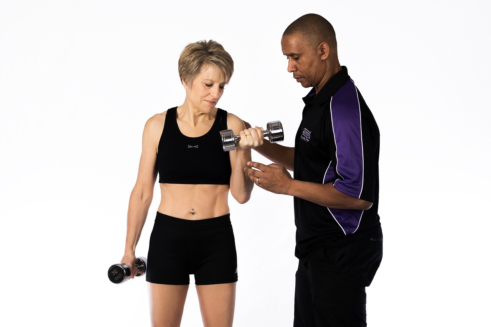

TL;DR
To boost productivity, recognize common planning pitfalls like unrealistic expectations. Implement a structured weekly workflow focusing on task prioritization, energy management, and review sessions.
Busy Professionals: Are You Optimizing Your Weekly Planning?
If you're a busy professional or freelancer juggling multiple projects, your weekly planning routine must be effective. Often, a lack of focus and scattered tasks can derail even the best intentions. Let's face it—most people adhere to a rigid structure that doesn't account for the unpredictability of their workload. Moreover, reliance on generic advice can result in missed deadlines and low morale.
The Flaws in Conventional Planning Techniques
Many professionals approach weekly planning as a one-size-fits-all task, often leading to frustration and inefficiency. A common error is allocating fixed hours for specific tasks without factoring in individual energy cycles.
For instance, someone who feels most productive in the mornings might schedule their most critical tasks for the afternoon when their focus naturally wanes. This misalignment can lead to diminished output, with studies showing that productivity drops by as much as 20% when individuals work against their natural rhythms.
Furthermore, there’s a tendency to prioritize less critical tasks that appear easier or are more immediately gratifying, such as answering emails or attending unnecessary meetings.
For example, a professional might spend two hours on emails in a single day—time that could be better utilized on a project that could yield significant results if approached with fresh energy.
This trade-off can create a cycle of urgency without impact, leaving important initiatives sidelined while trivial matters take precedence.
Consider the case of Sarah, a marketing manager. Each week, she lists out her tasks without considering their importance or her peak performance times.
Create a Tailored Workflow for Your Weekly Planning

So how do you establish an efficient weekly planning routine? Start by implementing this workflow structured in three main steps:
- Task List Creation: At the beginning of each week, dedicate 20 to 30 minutes to write down all the tasks you need to complete, organizing them by priority.
For instance, if you have ten tasks, categorize them as "High Priority," "Medium Priority," and "Low Priority." This not only clarifies what requires immediate attention but also sets realistic expectations.
You might discover that two critical reports due for the week take precedence over less urgent admin tasks.
- Time Block Allocation: Once your tasks are listed, assign specific time slots based on your daily energy levels.
For example, if you often feel most productive in the morning, allocate 9 AM to 11 AM for high-priority tasks like writing a report. Conversely, save lighter tasks, such as responding to emails or scheduling meetings, for the afternoon when your energy might dip.
Use tools like Google Calendar or Todoist to visually block out these time slots; this can help prevent task spillover and overcommitment.
- Review Sessions: Schedule daily or weekly review sessions, preferably for 15-20 minutes at the end of the day or week, to assess your progress.
For example, you may find that you completed 80% of your tasks by Wednesday but struggled with consistent focus on Friday.
Learning from a Freelancer: 7 Steps to Success
Consider a freelancer named Sarah who revamped her weekly planning routine and significantly boosted her output. Her approach followed these seven steps:
- Identify all projects for the week.
Every Sunday evening, Sarah sat down to list all her ongoing projects and deadlines. For example, she had a graphic design project due Thursday, a blog post for a client due Friday, and a personal project she'd set aside.
By clarifying her weekly workload, she could prioritize effectively.
- Set daily goals tailored to her energy peaks. Sarah understood that her most productive hours were typically from 8 AM to 12 PM.
She dedicated this block to complex tasks, like designing a client’s website, ensuring she was aligned with her peak performance.
- Allocate tasks in one-hour blocks. To prevent burnout, Sarah divided her day into focused one-hour work sessions, followed by a 10-minute break.
During busy weeks, she found this method helped her complete tasks more efficiently. For instance, she spent one hour on client emails, followed by an hour of design work.
- Leave buffer time for unforeseen tasks or creative blocks.
Sarah consciously scheduled a two-hour buffer on Wednesdays, knowing these days often derailed her plans. This flexibility allowed her to accommodate unexpected projects or those moments when inspiration simply disappeared.
- Plan a review session every Friday afternoon. Sarah committed one hour every Friday at 4 PM to review her week.
Avoiding Common Planning Mistakes
Planning errors can significantly derail productivity, leading to unnecessary stress and frustration. One prevalent mistake is setting unrealistic expectations, such as trying to fit 20 tasks into a single day.
This is not only overwhelming but can also lead to chronic burnout. For instance, if you allocate only 15 minutes to a complex project that typically requires an hour, you risk delivering subpar work that reflects poorly on your capabilities.
Moreover, failing to account for potential distractions can leave you scrambling when unexpected issues arise. Imagine you plan to complete a marketing report, but in the middle of your focused work session, an urgent client request disrupts your flow. Without a buffer in your schedule, you may find that your attention is split, leading to mistakes that require additional time to rectify.
As a strategy to combat these issues, reassess your daily workload each week. Aim for dedicating about 60% of your time to high-priority tasks, like ongoing projects or critical meetings, and allow the remaining 40% for flexibility to handle interruptions or tasks that may arise unexpectedly.
Tools and Strategies for Enhanced Planning
To add efficiency to your planning routine, consider integrating specific tools that cater to your unique needs. For example, tools like Asana, Trello, and Todoist all offer different approaches to task management.
Asana excels in project collaboration, allowing you to create tasks with deadlines; for instance, a team project can be broken into a 5-hour weekly commitment with milestones set at every 2 hours of work.
Trello utilizes a visual board format, ideal for those who prefer a more dynamic layout; you might spend 15 minutes daily updating your cards, ensuring priorities are clear. Todoist, with its priority tagging feature, could help you tackle your most pressing tasks first, such as completing a report by Friday—channeling focused time blocks of 1-2 hours.
Investing a little time in the right tools can transform your work planning. Choose software that resonates with your workflow and adjust it weekly for maximum effectiveness.
FAQ
What is the best way to prioritize tasks in my weekly plan?
Use the Eisenhower Matrix to distinguish between urgent and important tasks.
How can I adjust my planning routine to boost productivity?
Regularly review your workflow to identify bottlenecks and make necessary adjustments.
This article is reviewed for practical usefulness and updated when information changes.
Turn this into a workflow
Do not stop at ideas. Pick one workflow, test it for 14 days, then keep only what reduces friction.
Search more articles
Find related tools, workflows, and guides.
Photo credits
- Photo 1: mariolovera_foto via Pixabay
- Photo 2: authorcode via Pixabay
- Photo 3: Erak007 via Pixabay
- Photo 4: geralt via Pixabay
- Photo 5: Alexas_Fotos via Pixabay